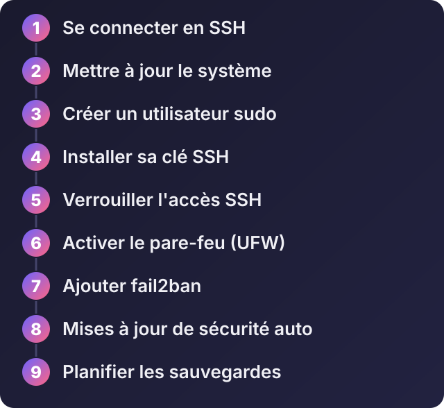
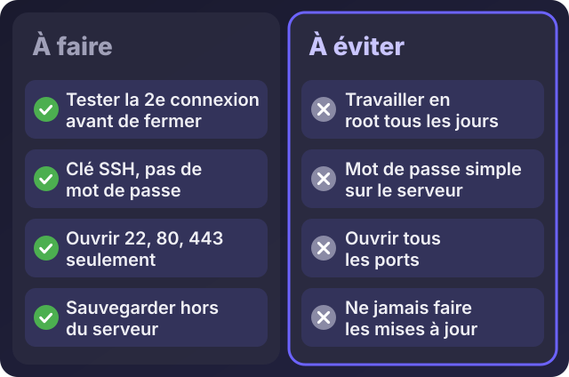

Je viens d'acheter un VPS : comment le configurer et le sécuriser, étape par étape

Écouter cet article · environ 5 min
Vous venez d'acheter un VPS. L'hébergeur vous envoie une adresse IP, un utilisateur (souvent root) et un mot de passe. Ce serveur est déjà visible sur Internet, et des robots vont commencer à tester son accès dans les minutes qui suivent. Voici comment le préparer correctement avant d'y mettre quoi que ce soit.
Ce tuto suppose un VPS Ubuntu (par exemple une version LTS récente). Je prends 203.0.113.25 comme adresse d'exemple : remplacez-la par la vôtre.

1. Se connecter en SSH
SSH est le moyen de contrôler le serveur à distance. Sous Windows 10 et 11, ouvrez PowerShell ; sous Linux et Mac, le terminal. (Si vous préférez une interface, PuTTY existe.)
ssh root@203.0.113.25À la première connexion, le terminal vous demande de confirmer l'identité du serveur : répondez yes, puis saisissez le mot de passe reçu.
2. Mettre à jour le système
apt update && apt upgrade -ySi la mise à jour installe un nouveau noyau, redémarrez avec reboot, puis reconnectez-vous.
3. Créer un utilisateur normal
Travailler en root tous les jours est dangereux : une faute de frappe peut tout détruire. Créez un utilisateur qui a le droit d'administrer, mais seulement quand il le demande :
adduser deploy
usermod -aG sudo deploy4. Se connecter avec une clé SSH
Une clé SSH est bien plus solide qu'un mot de passe. Sur votre ordinateur (pas sur le serveur) :
ssh-keygen -t ed25519 -C "mon-ordinateur"Cela crée deux fichiers : une clé privée (à ne jamais partager) et une clé publique, avec l'extension .pub. Envoyez la clé publique au serveur :
ssh-copy-id deploy@203.0.113.25Sous Windows, si ssh-copy-id n'existe pas, connectez-vous en deploy avec son mot de passe et créez le fichier à la main :
mkdir -p ~/.ssh && chmod 700 ~/.ssh
nano ~/.ssh/authorized_keys
chmod 600 ~/.ssh/authorized_keysCollez-y le contenu de votre fichier .pub.
5. Verrouiller l'accès SSH
Une fois le test réussi, modifiez la configuration SSH :
sudo nano /etc/ssh/sshd_configRéglez ces deux lignes :
PermitRootLogin no
PasswordAuthentication noPuis testez la syntaxe et relancez :
sudo sshd -t
sudo systemctl restart sshRouvrez un nouveau terminal pour vérifier que vous entrez toujours. Si vous êtes bloqué, la plupart des hébergeurs offrent une console dans leur interface web ou un mode de secours.
6. Activer le pare-feu
Le pare-feu ne laisse passer que ce qui est nécessaire. Avec UFW, autorisez SSH avant d'activer, sinon vous coupez votre propre accès :
sudo ufw allow OpenSSH
sudo ufw allow 80/tcp
sudo ufw allow 443/tcp
sudo ufw enable
sudo ufw statusOuvrez 80 et 443 seulement si le serveur doit servir des sites. Certains hébergeurs ajoutent aussi un pare-feu dans leur interface : utilisez-le en plus.
7. Ajouter fail2ban
fail2ban bannit pour un temps les adresses qui essaient plusieurs fois de se connecter en vain. Sur Ubuntu, la protection de SSH est généralement active par défaut :
sudo apt install -y fail2ban
sudo systemctl status fail2ban8. Les mises à jour de sécurité automatiques
sudo apt install -y unattended-upgrades
sudo dpkg-reconfigure --priority=low unattended-upgradesLe serveur installe lui-même les correctifs de sécurité. Il faudra quand même faire de temps en temps une mise à jour complète et redémarrer.
9. Quelques réglages utiles
sudo timedatectl set-timezone Africa/Abidjan
df -h
free -hLa première commande règle le fuseau horaire. Les deux autres montrent l'espace disque et la mémoire : prenez l'habitude de les regarder.
Les sauvegardes : à prévoir dès le premier jour
Les instantanés (snapshots) proposés par l'hébergeur sont pratiques, mais ils sont chez le même fournisseur. Ce n'est pas une vraie sauvegarde. Prévoyez aussi :
- une copie régulière de vos données (bases de données, fichiers envoyés par vos utilisateurs) sur un autre serveur ou un autre service ;
- un test de restauration de temps en temps : une sauvegarde qu'on n'a jamais restaurée est une hypothèse.

Et ensuite ?
Votre serveur est propre et sécurisé. Il reste à y installer ce qu'il vous faut : un site PHP, une application Laravel, un projet React et Node.js. Les articles précédents expliquent chacun de ces cas. L'article suivant compare les façons de gérer un VPS : à la main, avec un panneau de contrôle ou avec Docker.
Si vous préférez ne pas le faire vous-même, je peux configurer et sécuriser votre VPS : écrivez-moi sur WhatsApp en précisant votre hébergeur.